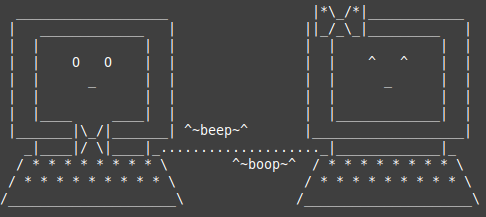

DevOps for Community Discord Bot

Tools: AWS ECS/ECR, GitHub Actions, Docker
Implemented a GitHub Actions-based continuous integration (CI) pipeline
for existing JavaScript-based Discord bot. Previous project configuration required
developers to update the bot manually, interrupting availability for end users.
The new configuration enables developers to easily test and deploy without extra steps.
The pipeline itself deploys the bot to an AWS EC2 instance via ECR/ECS and is only run
in specific circumstances. Additionally, deployments require passing unit tests and
manual approval from a project maintainer.

Tools: C, Bash, GitLab CI, Virtualbox, Make
Implemented new features within NetBSD's inetd super-server
daemon for team-based undergraduate capstone project. Project
was completed in series of Agile-like sprints under advisement
of Dr. Shri Mare. Commit to source here.
My contributions include creating, configuring, and hosting
automated testing using GitLab CI, Virtualbox, and the NetBSD-supported
ATF framework. Additionally, I researched and implemented
IP-based rate limiting with another team member.
Driving Motors w/ Bit-banged SPI
Tools: C, FreeRTOS, CMake
Using two Raspberry Pi Pico boards connected via SPI, drove two motors in sync using PID controller
loop.
On TX-side receipt of user input, TX device would instruct RX device to spin motors to specific
location.
While motors spinning or stabilizing, TX device blinks external LED polling the RX device for
instruction completion.
Both devices programmed using concurrent FreeRTOS APIs and leverage hand-built SPI communication.
Embedded Networking: TCPlp

Tools: C, Zephyr RTOS, CMake
Reproduced modified experiments from the NSDI '20 paper Performant TCP for Low-Power
Wireless Networks
on commodity hardware (the AdaFruit Feather Express nrf52840 pictured at left), comparing OpenThread
TCPlp stack approach to Zephyr TCP stack implementation.
ATL Compiler

Tools: C, Flex/Yacc, Make, CMake
Constructed a parser-driven compiler for a strongly-typed
language similar to Modula-2 for an undergraduate compilers
course. Project entailed the full construction of the compiler,
including symbol table and abstract syntax tree construction,
and code generation for a stack-based virtual machine.
Networked Chatroom

Tools: C, TCP/IP, Make
Collaboratively implemented a simple, scalable terminal-based chatroom
for an undergraduate networks course. Project leveraged the C sockets API
and used a two-part observer/messeger client protocol for simplicity.

Tools: Rust, RISC ISA Assembly
Implemented a Rust-based virtual machine for the 16-bit LC-3 educational ISA,
as described in this C-based tutorial.
XFeedForward PUF
Tools: NumPy, GitLab CI, PyTest, PyTorch, Bash, Plt/Seaborn
Collaboratively built and tested a Python-based simulation
package to investigate the relative security of hardware
security primitives (PUFs), including existing and novel
configurations.
In addition to co-leading project design, my personal contributions include:
- Scripting of data generation and benchmarking for use on HPC cluster
- Refactoring project, creating into bona-fide Python package
- Graphing and analysis of results
The project resulted in the identification of several unique and more resilient PUF configurations and the foundation of future PUF simulation projects. Paper is forthcoming in ISCAS '22!
Tools: Python, PyTorch, scikit-learn, WandB
Collaborative project for graduate-level deep learning course
to determine the impact of common data augmentations in
classifying pneumonia in chest X-rays. Used an expert-validated
data set, taking into account class imbalance in model evaluation.
See our report and slides in the linked repository for more details!